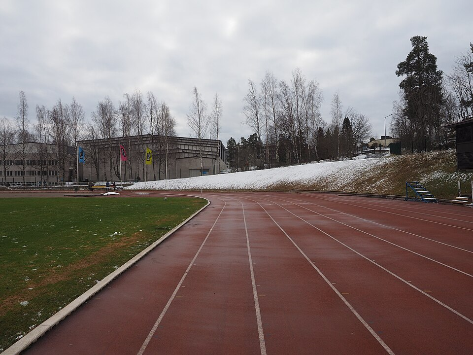

Marathon race records
Full marathon records are numbered from No.1 to No.47 and displayed in descending order. No.1 is Wuxi in November 2020; No.2 is Shanghai in November 2020.
- Number range
- No.1–No.47
- First record
- Wuxi Marathon
- Latest entry
- Shanghai Marathon
- Personal best
- 3:05:30
Race records
| No. | Month | Race | Time |
|---|---|---|---|
| No.2 | November 2020 | Shanghai Marathon | 3:56 |
| No.1 | November 2020 | Wuxi Marathon | 4:06:36 |
